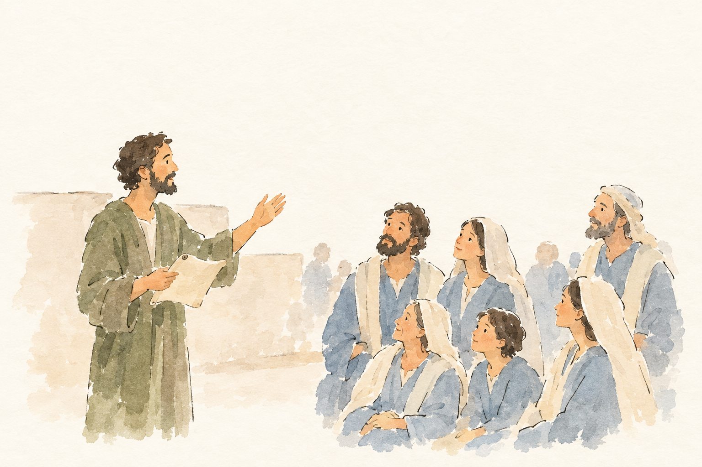
TIT-003-R1__r1v1.png: unklar, 4 Punkte, Kern 1 Die Ansprache einer Gruppe passt, aber Titus, Paulus und die konkreten Reiseaufträge sowie Ermahnung, Grüße und Segen sind nicht erkennbar.
Blind: A standing man holds a sheet or scroll and gestures toward a group. Several people sit or stand facing him as if listening. – It could depict biblical teaching or preaching, but no particular story or moment can be identified confidently from the picture alone.
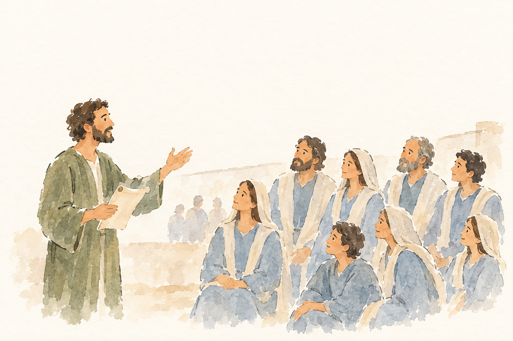
TIT-003-R1__r1v2.png: unklar, 4 Punkte, Kern 1 Die konkreten Anweisungen an Titus und die Grüße mit dem abschließenden Segen sind nicht erkennbar; auch die Personen bleiben unidentifiziert.
Blind: A standing man holds a scroll and gestures toward a group. The people in the foreground look toward him, several seated and others standing, as if listening to him speak. – The scene could depict a biblical teacher addressing a crowd, but no particular story or exact moment can be identified confidently from the picture alone.
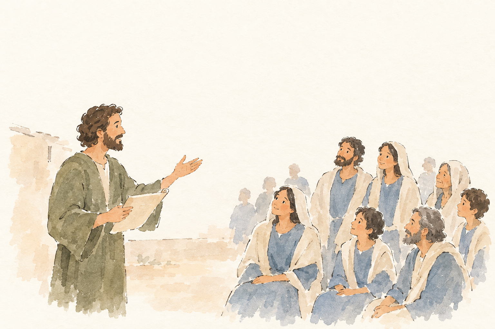
TIT-003-R1__r2v1.png: unklar, 4 Punkte, Kern 1 Das Vorlesen vor einer Gemeinde passt möglicherweise, aber Titus, Paulus und die Reiseaufträge sowie die Ermahnung zu guten Werken und der Gnadengruß sind nicht erkennbar.
Blind: A man holds a sheet and gestures toward a group. Several seated and standing listeners look toward him. – Possibly Jesus teaching a crowd, but there are no visible details that establish a particular Bible story or moment.
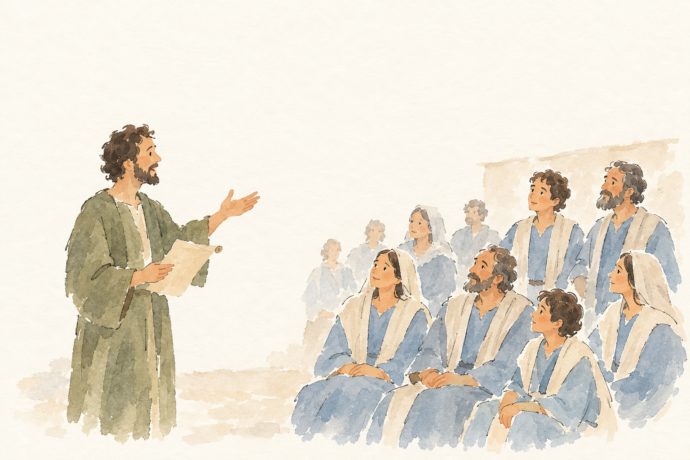
TIT-003-R1__r2v2.png: unklar, 4 Punkte, Kern 1 Das Vorlesen vor einer Gruppe passt allgemein, aber Titus, Paulus’ Reise- und Versorgungsanweisungen sowie Grüße und Segen sind nicht erkennbar.
Blind: A man holds a sheet or scroll and gestures toward a gathered group. The people sit or stand facing him as if listening. – Possibly Ezra reading the law to the gathered people, but the picture does not identify the event or moment clearly enough to be certain.
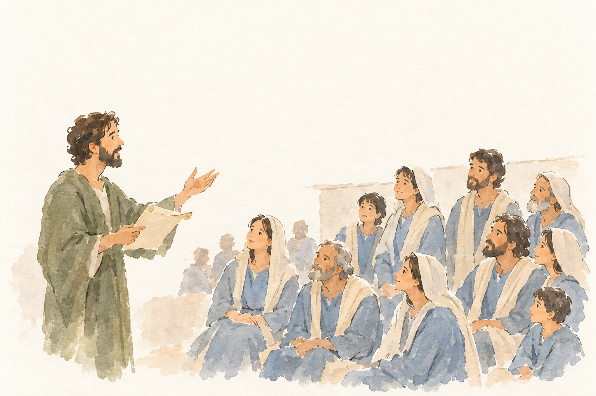
TIT-003-R1__r3v1.png: unklar, 4 Punkte, Kern 1 Die Versammlung mit Schriftrolle passt allgemein, doch Titus und Paulus sowie die Reiseaufträge, die guten Werke und der abschließende Gnadengruß sind nicht erkennbar.
Blind: A standing man holds a scroll and gestures toward a gathered group. The people appear to listen and look toward him. – Possibly Jesus reading or teaching from scripture, perhaps his reading of Isaiah in the synagogue at Nazareth. The picture lacks enough identifying detail to establish the story or exact moment.
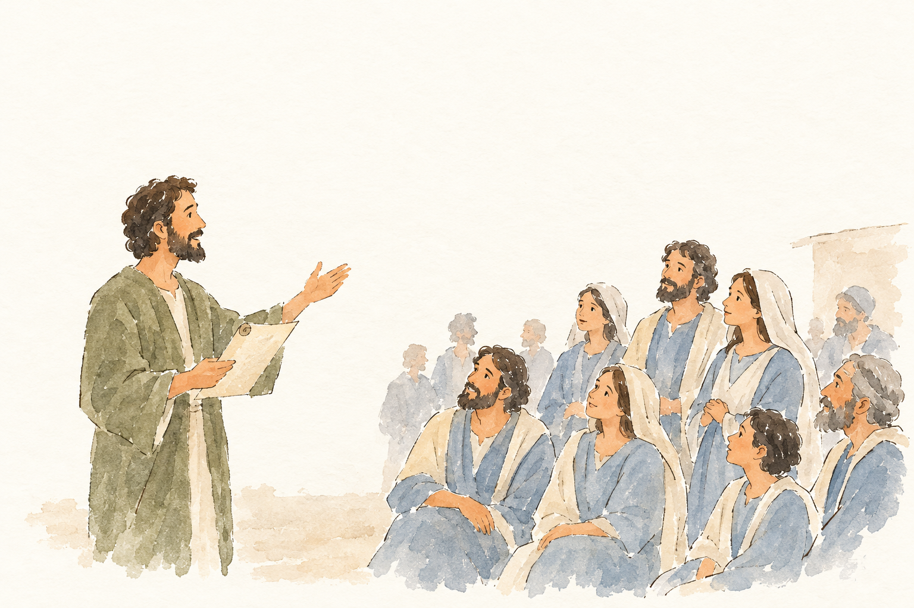
TIT-003-R1__r3v2.png: unklar, 5 Punkte, Kern 1 Das Vorlesen vor einer Gemeinde passt, doch der Briefschluss und seine konkreten Aufträge, Grüße und der Gnadensegen sind nicht erkennbar.
Blind: A standing man holds a sheet and gestures toward a group of people. The people sit or stand facing him, apparently listening. – Possibly Jesus teaching a group, but the picture does not establish a particular Bible story or exact moment.
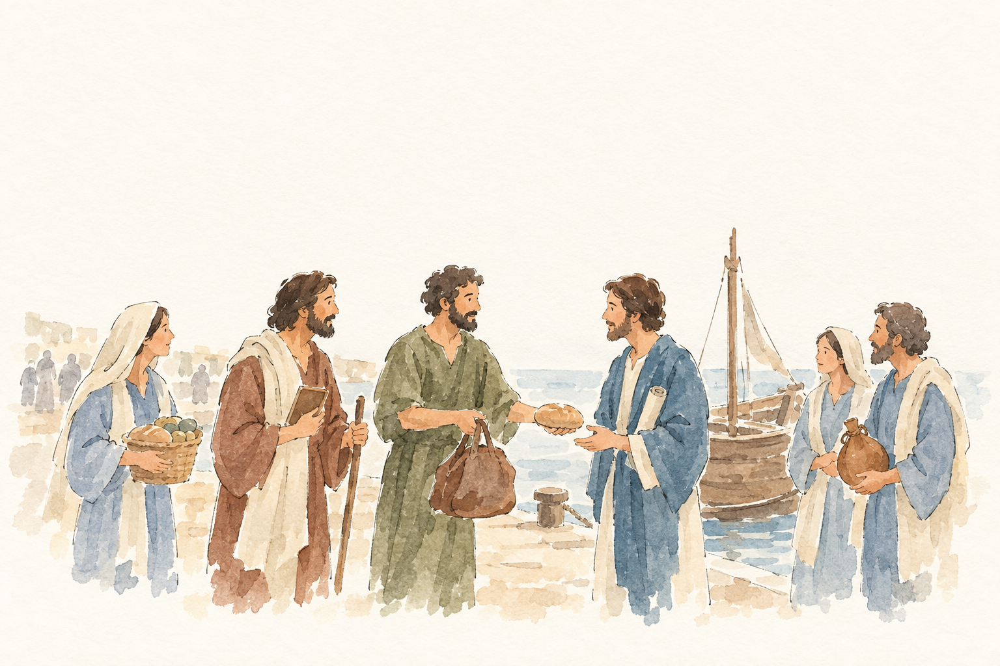
TIT-003-R2__r1v1.png: unklar, 4 Punkte, Kern 1 Titus, Zenas und Apollos sind nicht identifiziert; der Zweck der Reiseausrüstung und die Aufforderung zu guten Werken bleiben unklar.
Blind: A man in green offers a loaf of bread to a man in blue, who reaches toward it. Other people stand nearby holding food, a staff, a book and a flask, beside a boat. – Possibly a scene involving Jesus and disciples by the water, but the image does not establish a particular Bible story or moment.
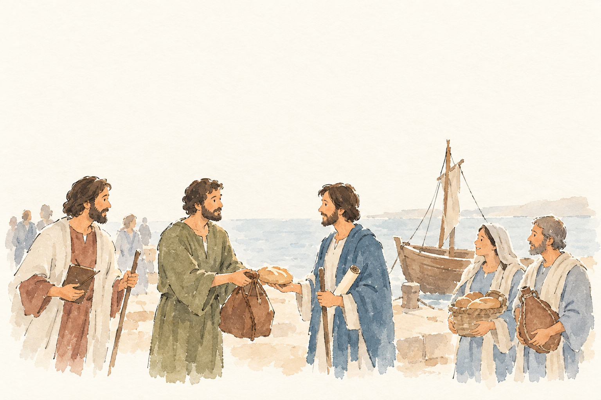
TIT-003-R2__r1v2.png: unklar, 5 Punkte, Kern 1 Die Versorgung mit Brot und Gepäck ist angedeutet, aber Titus, Zenas und Apollos sowie der Reisezweck und die Aufforderung zu guten Werken sind nicht erkennbar.
Blind: The men in green and blue face one another, with a loaf of bread held between them and a sack hanging below. The other foreground figures watch or stand nearby carrying a book, bread and a bag. – It may depict Jesus and his followers with bread, but the visible details do not establish a particular Bible story or exact moment.
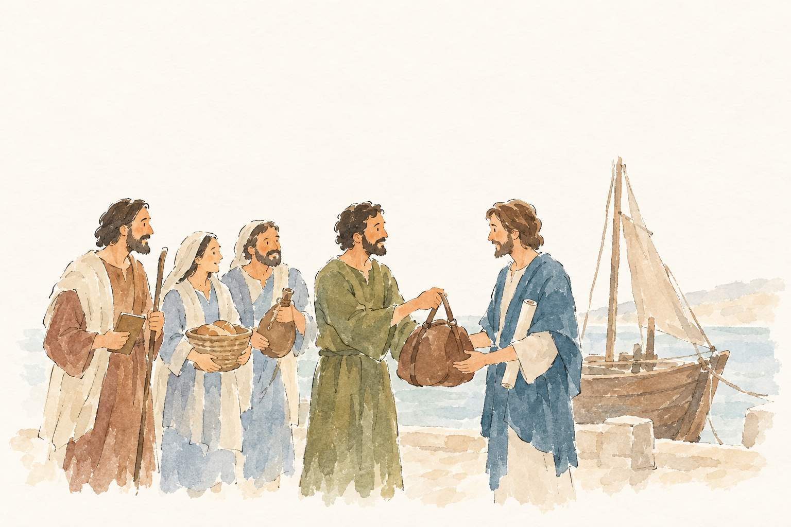
TIT-003-R2__r2v1.png: durchgefallen, 4 Punkte, Kern 1 Titus sowie Zenas und Apollos sind nicht eindeutig erkennbar; auch die Aufforderung zu guten Werken und einem fruchtbaren Leben fehlt.
Blind: The man in green hands or shows a bag to the man in blue, who supports it. Three companions stand nearby holding supplies, with a sailboat behind them. – The scene could illustrate biblical travelers preparing for a boat journey, but no specific story or moment can be identified confidently from the picture alone.
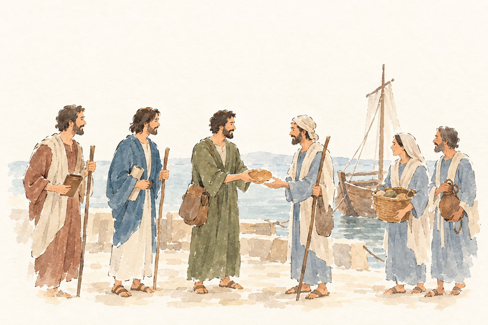
TIT-003-R2__r2v2.png: durchgefallen, 4 Punkte, Kern 1 Die Versorgung von Zenas und Apollos für ihre Reise ist nicht eindeutig erkennbar; auch die Aufforderung zu guten Werken fehlt.
Blind: The man in green offers a loaf of bread to the man facing him, who reaches toward it. The others stand nearby carrying staffs, a basket and other belongings. – Possibly the feeding of the five thousand, at the moment bread is being distributed, but the image does not establish the story conclusively.
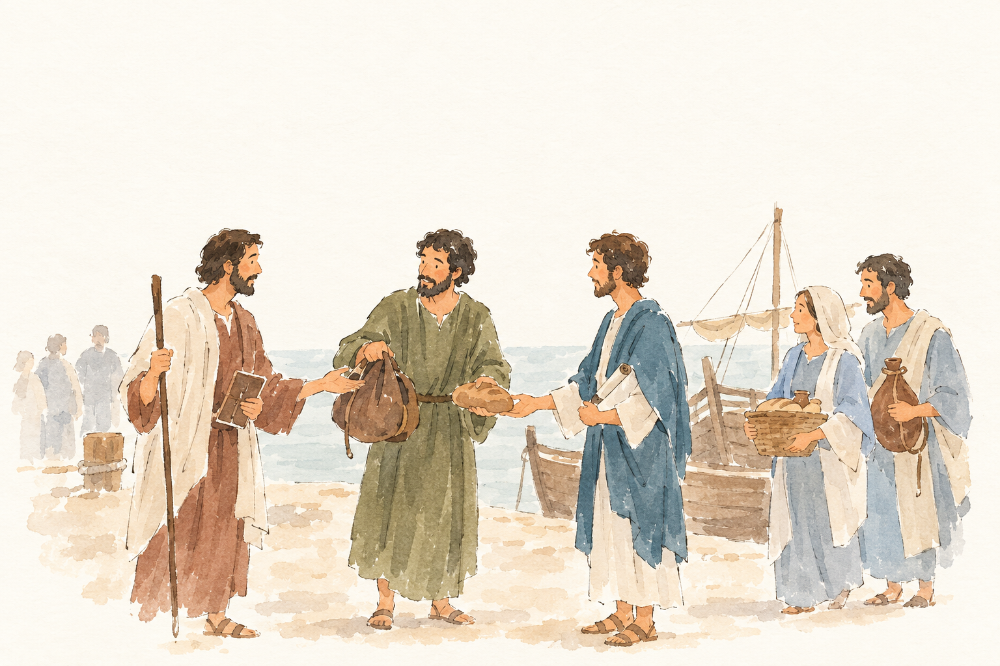
TIT-003-R2__r3v1.png ✔ gewählt: bestanden, 4 Punkte, Kern 1 Die Versorgung mit Reiseproviant ist erkennbar, aber Titus, Zenas und Apollos sowie der Reiseanlass und der Aufruf zu guten Werken bleiben unklar.
Blind: The man in green holds a bag and a loaf while the man in blue reaches toward the loaf. The man with the staff gestures toward them, and the two people on the right hold a basket and another bag. – Possibly a scene of Jesus and disciples preparing for a journey, but the image does not identify a particular Bible story or moment with confidence.
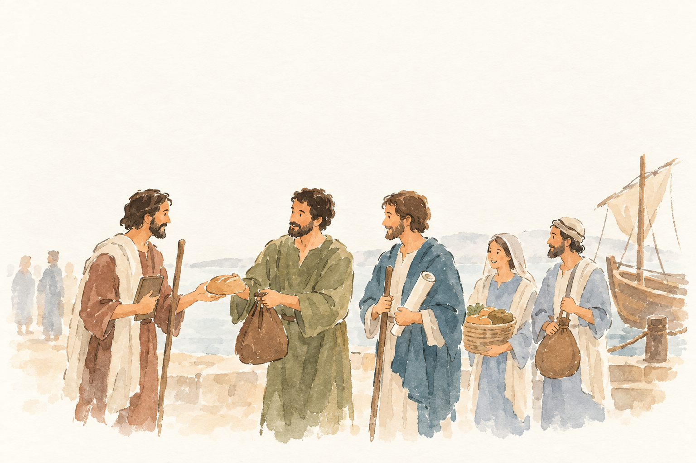
TIT-003-R2__r3v2.png: unklar, 4 Punkte, Kern 1 Die Versorgung von Zenas und Apollos für ihre Reise und die Aufforderung zu guten Werken sind nicht eindeutig erkennbar.
Blind: Two men face each other with a loaf between their hands, apparently passing or sharing it. Three companions stand nearby with a scroll, basket and sack, while distant figures stand behind them. – Possibly the distribution of bread in the feeding of the multitude, but the image lacks enough distinctive details to identify a Bible story or exact moment confidently.
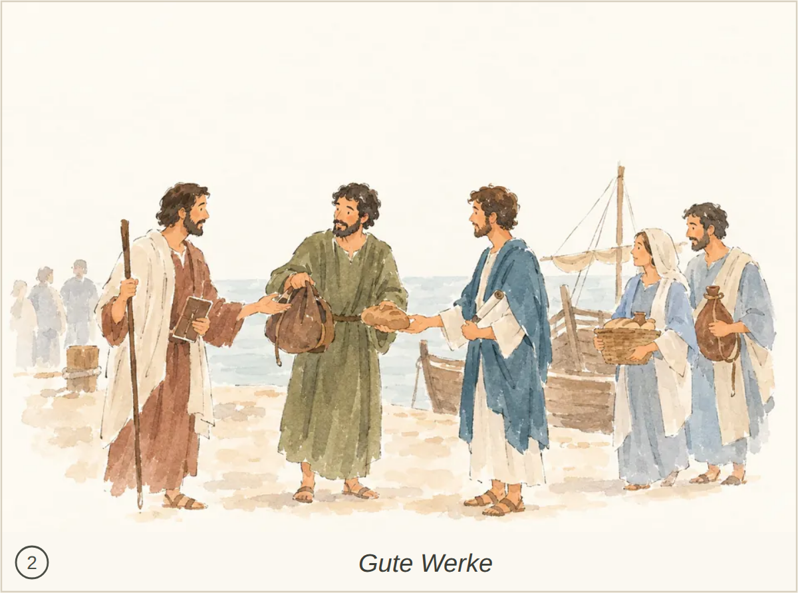
Kachel: bestanden, Kern 1 Die Reiseausrüstung für Zenas und Apollos durch Titus und die Aufforderung zu guten Werken werden nicht eindeutig erkannt.